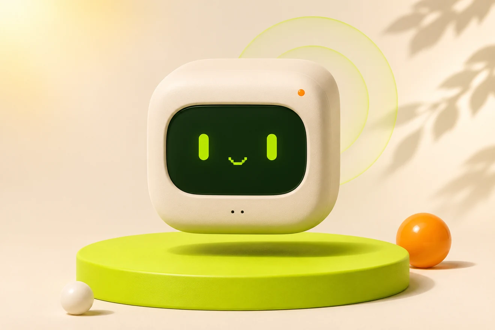

本机实时测温
USB 串口
你好，我是欧鲸鲸。把温度探头接上，我就能感受房间的冷暖，把它带进每一次聊天。

USB 串口
20–25 °C
浏览器刷写
选一个表情，或者拖动滑块，看看欧鲸鲸的语气怎么变。
滑块只改变演示值，真实温度由安装后的本机面板采集。
切换一次温度，曲线就会出现。
DS18B20 接到 ESP32-S3 的 GPIO16，读数经 USB 串口送到电脑。断开或过期时，面板会提示暂时无法获取。
DeepSeek Harness 每次组装模型请求时读取有效温度。日常聊天每轮有 17% 的机会顺带提起冷暖。直接询问时，聊天工具会即时查询。
在本机面板填写理想温度或范围，也可以告诉聊天里的欧鲸鲸。设置保存在本机，表情和回复共用这份偏好。
解压 Windows 新手包，双击 Start.cmd，按面板引导操作。双击 Stop.cmd 停止。
首次接入时可为兼容板烧录公开固件，再连接 DS18B20，确认面板显示真实温度。
浏览器刷写固件 ↗ 接线与固件指南 ↗通过面板进入 DeepSeek Harness，在模型设置里填写自己的 API Key，试着问一句「现在温度是多少？」
Windows 新手指南 ↗